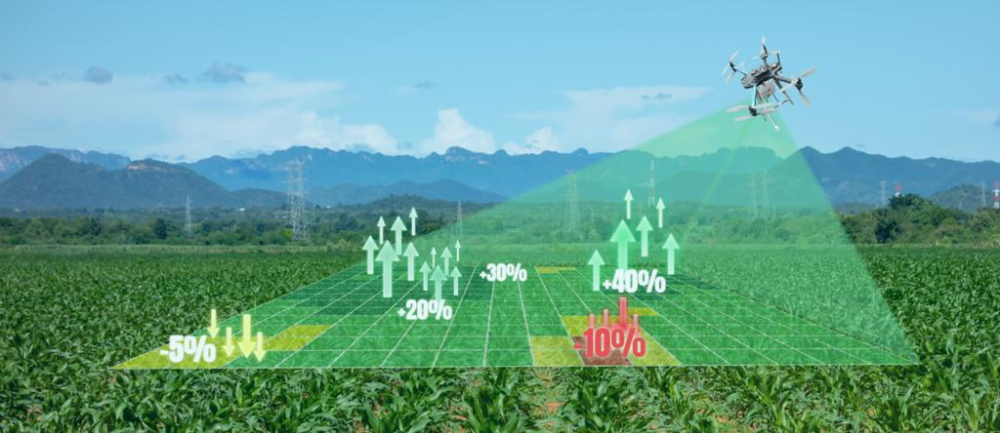

<div class="main">
    <video autoplay  [muted]="true" loop id="myVideo">
        <source src="../../../assets/AgriEdge.mp4" type="video/mp4">
        Your browser does not support HTML5 video.
    </video>
      <div>
        <h2 class="centeredHeading">
            Creating lasting profit for farmers everywhere
        </h2>
        <h5 class="centeredText">
            Farmer Education | Input Finanace & Distribution | Market Access
        </h5>
      </div>
      <div class="container centeredButton">
        <div class="row justify-content-center">
            <div class="col-xs-12">
                <div  class="text-center">
                    <button type="submit" class="btn btn-success">Covid-19 Response</button>
                    <button type="submit" class="btn btn-danger">Watch Video</button>
                </div>
            </div>
        </div>
    </div>
</div>
<div class="landing_ribbon">
    <h2>We are creating prosperous farmers &amp; thriving agric businesses through the following brands;</h2>
</div>
<div>
    <div class="new-home-look">
        <div class="new-home-look-1">
            
            <h3 style="font-size: 20px;padding-top: 20px;">Get the farmers in your network to subscribe</h3>
            <h4>
            <p style="color: #0d8c80;font-size: 18px;">by dialling *<span>399</span># on any network in Ghana to access...</p>
            </h4>
            <br>
            <br><br>
            <a  target="_blank" class="btn-rounded new-home-look-1-button">LEARN MORE</a>
            <br><br>
        </div>
        <div class="new-home-look-2">
            
            <br><br>
            <h4>DIGITIZING GLOBAL SUPPLY CHAINS</h4>
            <p >Create a free account today</p>
            <a  target="_blank" class="btn-rounded new-home-look-2-button mt-3">LEARN MORE</a>
        </div>
        </div>
    <app-footer></app-footer>
</div>